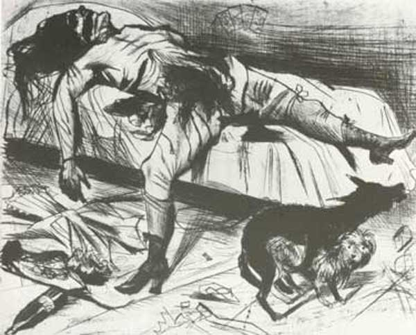
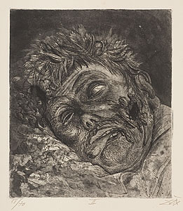

-
All That Glitters… Otto Dix at Neue Gallery
by Joseph Akel April 20, 2010
In the streets of Berlin it can suddenly strike you

that it is unlikely to be very long until the whole
lot bursts apart. -Siegfried KracauerA glistening blaze of scarlet and carmine oils, Otto Dix’s Portrait of the Dancer Anita Berber (1925) is, according to Olaf Peter, curator of the first American Dix retrospective, “without a doubt the icon of the Weimar Republic.” Though one would not guess it from her aged appearance, Berber was twenty-six at the time Dix painted her, a bisexual prostitute and cabaret dancer who mixed with both high and low, famed for her proclivity towards nudity, cocaine, and excess. Pallid and consumptive, Dix’s Berber is at once sickly and sultry in a skin-tight crimson dress set against an empyreal wash of blood-red. She would be dead in three years, with the Weimar Republic not far behind. In a sense, Berber is a figural portmanteau onto which Dix projects the mordant nihilistic German mindset. Ravaged by death and excess, Berber is a metaphor for Berlin, a colony degage laid amidst the ataraxic sounds of hot jazz, its people determined to forget their pains in a frenzied pursuit of the bacchanal.
Chosen to marquee this masterfully curated exhibition at the Neue Gallerie, this portrait that is so much about the Weimar era is perhaps more telling about Dix himself. Berber is but one of many women appearing throughout the show in varying states of vulnerability, sexual activity, and fecundity. Dix’s often violent, misogynistic representations are, for many, the most disturbing aspects of the artist’s oeuvre. Here the female exists for Dix simultaneously as a figure of lust and revulsion, reverence and disgust. In Dix’s Reclining Woman on Leopard Skin (1927), a solitary female figure lies upon a feral pelt, her body arranged in serpentine form. With the right claw-like hand extended slightly, feline-like eyes contemplate the observer, Dix perhaps, as the woman appears to calculate her next move. A menacing wolf lingers hungrily in the background, underlining the predatory theme. Here the figural woman may not be vulnerable or passive, but she is dangerous, a sexual siren to which man is sure to fall prey.
For the majority of the images here, however, women occupy spaces where erotic fulfillment is combined with violence and death. For Dix, sex was a carnal danse macabre, where mortality lay housed within the sordid, lustful rituals of copulation. Nowhere in the exhibition is this more apparent than in Dix’s small watercolor, Portrait of Lovers (1923), a vivid, frenetic scene in which a rotting, fetid female corpse straddles an emaciated, skeletal man. In this grim study, procreation does not beget new life, but rather as Fernando Pessoa claimed in his Book of Disquiet, a paradox where “[t]he dead are born” to the dying. In other, even more grotesque works, especially the Death and Resurrection (1922) series, the female sex becomes the object of a savage and murderous primitivism. One such image, titled Lustmord, translating literally as ‘sex murder,’ portrays a dead, prostrate female figure with her genitalia bloodily mutilated. The composition’s savagery is echoed in Dix’s heavy, expressionistic hand, effectively scarring the metal plates upon which the image is etched. The crime recorded by Dix is two-fold, the brutal slaying second only to the sex act itself. The cramped nature of the brothel room, combined with a distanced perspective and forensic manner, evoke a Weegee snapshot. That is until Dix injects his morbid humor into the mise en scene, adding two dogs mating in the corner of the image.
Women, or more appropriately, their anatomical capabilities, are represented in conjunction with a savage sense of mortality informed by Dix’s time as a soldier during the First World War. Indeed, one could argue that Dix’s representations of women are profoundly intertwined with the horrors of war. There are, for example, frequent references to prostitutes throughout Dix’s oeuvre, but some of the earliest of these appear in his Der Kreig (War) (1924) cycle of fifty etchings. In one such etching, Abandoned Prostitutes, gaudy, rouged women of the night parade on a darkened sidewalk turning tricks as a menacing soldier looms in the distance. Women can be seen throughout the suite as fleshy, carnal distractions to the surrounding war and carnage. Their ability for procreation, for creation, becomes bound up with the destruction of war and, as a result, women and sex become complicit in the totality of the war-experience.

And it is worth repeating how profoundly this war-experience informed Dix’s Weltanschauung. Influenced as much by Nietzsche’s will-to-power nihilism as by the hawkish manifestos of the Italian Futurists, Dix would volunteer to fight in the trenches of World War I. Saying, in a 1963 interview, of his desire to fight,I had to experience how someone beside me suddenly falls over and is dead and the bullet has hit him squarely. I had to experience that quite directly…I have to experience all the ghastly, bottomless depths of life for myself.
A young machine-gunner on the frontline abattoir of the 1916 Somme Offensive, Dix experienced first-hand one of the bloodiest military operations in history, one costing close to 1.5 million casualties. In this topography of annihilation, the young artist would come to believe that “war, too, must be seen as natural phenomena.”
No doubt wishing to underscore the formative nature of Dix’s wartime experiences, curator Olaf Peter’s exhibits the War cycle in a separate room of the Galerie. Recalling Goya’s Disasters of War, Dix’s War is overwhelming to experience, as the artist quickly conjures the ambiance of the Western Front. From out of the velvety washes of black aquatint there emerge Bosch-like vistas scarred by artillery (Collapsed Trenches), images that evince the scent of acrid, leaden skies – a palpable mixture of metal upon winds tinged with the fetid stench of rotting corpses. There is, noted Paul Ferdinand Schmidt, the hand of “fanatical cold-bloodedness” at work in all these images. Indeed, Dix’s emotional stance appears to be neither detached nor wholly compassionate towards the blight surrounding him. A Dürer-esque smiling skull sprouting worms (Skull) is shown along with a study of rotting corpses (Dead Man – St. Clement), both rendered with a high degree of forensic exactitude. As curator Mark Henshaw would note in his catalog statement for the Austrian National Gallery, “Paradoxically, there is also a quality of sensuousness, an almost perverse delight in [Dix’s] rendering of horrific detail.” But beyond just a zealous interest in rendering, Dix himself took a perverse pleasure in the events unfolding around him. Olaf Peter relates how Dix would often appall his friends by providing a “detailed description of the pleasurable sensation to be had when bayoneting an enemy to death.”
No doubt it was all of this together that lead Dix to identify with the burgeoning Neue Sachlichkeit movement. Attributed to a 1925 exhibition organized by G.F. Hartlaub, Neue Sachlichkeit, roughly translated as New Objectivity or Austerity, referred to the growing number of Weimar artists, Christian Schad and George Grosz included, who rejected the soulful, sentimental characteristics of Expressionism. These artists replaced these characteristics with biting, highly stylized representations of post-war Europe. Neue Sachlichkeit came to personify what historian William Robinson observed as the “depressed, neurotic spirit of the time.” While their work was not necessarily devoid of emotional content, members denounced empathy. Adopting established techniques of the Old Masters’, in combination with confrontational scenes, Neue Sachlichkeit sought to arouse in the viewer a distressing sense of banality and disillusionment.
For his part, Dix readily drew inspiration from the Old Masters, especially Dürer, Lucas Cranach, and Hans Holbein as he combined a painstaking attention to detail with a Mannerist flair. Within the exhibition, images such as Portrait of the Poet Iwar von Lücken (1926), or Portrait of the Lawyer Dr.Hugo Simons (1925), present elongated, exaggerated bodies reminiscent of El Greco’s depictions of the Stations of the Cross. That Mannerism should have had such an impact on Dix is significant, for though it had occurred some 400 years prior, it dealt with many of the same issues confronting Neue Sachlichkeit . Largely in reaction to the harmonious, restrained naturalism of Renaissance artists, Mannerism was, as historian Arnold Hauser notes, “the expression of antagonism between the spiritualistic and sensualistic trends of the age.”
And yet, for all the similarities between the movements, the Mannerist art of the sixteenth century was largely an aristocratic movement, “the court style par-excellence.” Dix, by contrast, was born into a poor laborer’s family in Untermhaus near Gera, and it was the figural and symbolic structures of the bourgeoisie that became the primary objects of his mordant, often macabre satire. Doctors, in particular, appear to garner special attention from Dix, such as in the Portrait of the Laryngologist Dr. Mayer-Herman .(1926) Here we find the forensic obsession observed in his frontline studies extended to the forensic scientists themselves. Whether merchants, bankers, or fashionable impresarios of the bourgeoisie set like Anita Berber Dix’s portraits read like Plutarch’s Parallel Lives, a visual biography of a people, their virtues and vices rendered against an empire’s blazing decline.
In 1928 Bertolt Brecht, along with Kurt Weil, staged his famous production of The Threepenny Opera at Berlin’s Theater am Schiffbauerdamm. Brecht attempted to discourage viewers from developing illusory narratives and unnecessary sympathies towards his characters by emotionally distancing the audience from the performance. This was his celebrated Verfremdungseffekt or “alienation effect.” Audiences required this distance, Brecht believed, in order to be able to reflect critically on what was being presented, as opposed to being taken out of themselves as in traditional entertainment.
Dix certainly suffered from his own Verfremdungseffekt of sorts, a state he projected onto his canvasses. Dix’s use of the Old Masters’ techniques in conjunction with spectral colors, biting satire and images of graphic savagery offers a portal into the mind of a man who found the uncanny in the familiar. Brecht’s Verfremdungseffekt teaches the viewer to practice just this sense of distance, carefully considering the style presented as itself highly constructed and dependent upon an imbricated web of cultural and economic factors. Read this way, Dix’s images allow us to observe a brief, but persistently fascinating period in history through the lens of his trademark, pathological intensity. Whether visualizing the macabre and glorified world of Weimar Berlin, or gathering fleeting glimpses of the unease submerged in everyday circumstances, Dix’ work remains an unflinching vision of “life without dilution.”